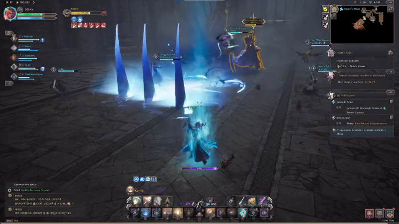
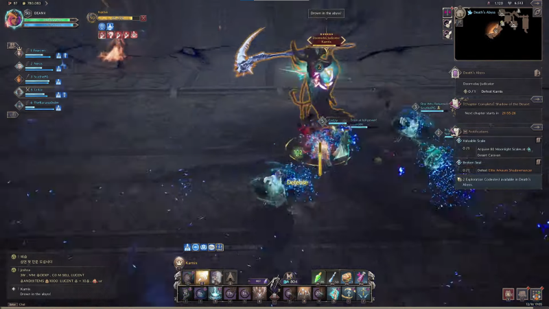

GUIA BOSS DUNGEONS LvL 50

DUNGEONS:
I - DEATH'S ABYSS
LOCALIZANDO KARNIX

Depois de derrotar com sucesso o Capitão do Elite Arkeum Riot Squad Captain, prossiga para a próxima sala, onde você encontrará o Doomsday Judicator Karnix.

HABILIDADES DE KARNIX
Ele possui cinco poderes que são utilizados durante a batalha. Aqui estão seus poderes para ajudá-lo durante a batalha.
PRIMEIRA HABILIDADE
Com sua primeira habilidade, Karnix desfere um soco poderoso que causa muitos danos. Ele começa girando sua foice antes de baixá-la rapidamente para causar danos massivos e realizar o controle de multidão (CC), que deixa os jogadores inconscientes. Uma curva rápida ou uma corrida rápida tirarão você do caminho desse ataque.
SEGUNDA HABILIDADE
A segunda habilidade de Karnix é lançar ataques básicos enquanto se teletransporta. O teletransporte utiliza sua habilidade inicial e percorre uma curta distância, surpreendendo os oponentes. Karnix lança três teletransportes e, em seguida, lança um ataque poderoso e imediato. Embora evitar esta mudança possa ser um desafio, a cooperação é crucial. Para manter o controle da situação, trabalhe com sua equipe para coordenar, virar e evitar a primeira abordagem.

TERCEIRA HABILIDADE
Para a terceira habilidade de Karnix, ele passa por uma breve fase de carregamento, girando antes de liberar rapidamente uma onda elétrica que causa dano de área de efeito (AOE) a seus inimigos. Para ficar ileso, ative uma habilidade de escudo assim que ele lançar o ataque. Isso o ajudará a evitar qualquer dano e a mantê-lo no jogo.
QUARTA HABILIDADE
Para a quarta habilidade de Karnix, ele desencadeia um golpe elétrico que marca seus oponentes. Uma vez marcado, ele libera foices giratórias que seguem o oponente marcado, causando dano significativo ao ser atingido. Você pode simplesmente fugir das foices que o perseguem para evitar sofrer danos. Durante o processo, Karnix se teletransporta para seus oponentes e lança um feitiço azul que atordoa os jogadores. Então uma dica é tentar mirar nos seus jogadores.

QUINTA HABILIDADE
Finalmente, a última habilidade de Karnix envolve marcar um inimigo com uma bolha azul. Após marcar seu oponente, ele carrega sua foice e se teletransporta rapidamente para o alvo marcado, balançando sua foice e causando dano considerável no impacto. Para evitar essa habilidade, sua equipe precisa entrar na bolha azul para evitar qualquer dano.

DROPS:
Ao derrotar o Karnix, você receberá as recompensas descritas no início de sua jornada no Abismo da Morte: LINK COM DROPS ATUALIZADOS! ! !
II - CURSED WASTELAND

Depois de derrotar os dois Vigilantes, é hora do evento principal da masmorra. Shaikal, o Elemental das Trevas Frenético.
HABILIDADES DE SHAIKAL
PRIMEIRA HABILIDADE
Um dos ataques mais fortes que Shaikal pode fazer é um grande círculo de névoa escura que causa danos aos jogadores ao atingir. Este ataque é completamente evitável através do bloqueio. Depois de ver o círculo roxo se formando, prepare-se para bloquear e o dano do ataque será negado.
SEGUNDA HABILIDADE
Este ataque tem como alvo o jogador mais distante do chefe. Se você for marcado com o orbe vermelho flutuando acima de sua cabeça, significa que um ataque está chegando. Fuja do seu grupo e espere até que o orbe vermelho desapareça. Isso significa que este ataque está prestes a formar uma habilidade de vórtice vermelho prejudicial . Assim que o orbe vermelho acima de sua cabeça desaparecer, fuja rapidamente para evitar danos.
TERCEIRA HABILIDADE
Esta terceira e última habilidade é um pouco mais complicada. Semelhante à habilidade do vórtice vermelho, um orbe roxo aparecerá acima da cabeça de um jogador aleatório. Assim que o orbe roxo desaparecer, isso significa que o próximo ataque AOE está prestes a se formar, que é uma névoa roxa onde Shaikal libera um longo fio de névoa escura na direção do jogador marcado. Este ataque pode ser totalmente evitado correndo imediatamente no sentido horário ou anti-horário na forma Morph, no entanto, isso significa que os jogadores devem observar Shaikal cuidadosamente para antecipar para onde correr.
DROPS:
Depois de derrotar Shaikal, os jogadores recebem os seguintes itens: LINK COM DROPS ATUALIZADOS! ! !
III - TEMPLE OF SLAUGHTER

CHEFE FINAL
O chefe final do Temple of Slaughter é o Rex Chimaerus.
Ao longo da fase de dano padrão do chefe, há alguns ataques a serem observados:
- Um ataque de salto no jogador com maior ameaça
- Cospe veneno à distância que deixa uma poça no chão
- Um golpe de cauda se você estiver atrás dele
Depois de algum tempo na fase, Rex Chimaerus seleciona um alvo para injetar veneno paralisante. Esse jogador tem que correr o mais longe possível do chefe e ter a posição do tanque entre o alvo e o chefe. Rei Chimaerus então libera três enormes bolas de fogo em direção ao alvo paralisado junto com um enorme spray venenoso à direita do chefe. Se feito corretamente, o tanque absorve o dano de duas bolas de fogo com um terceiro jogador interceptando a terceira bola de fogo. Então começa a próxima parte da mudança de fase.

Ao contrário do Temple of Roar, Rex surge em duas camadas de Air Pitons ao redor da arena. Um jogador tem que usar os Pitons para se agarrar alto o suficiente para pousar na plataforma acima de Rex. Assim que o jogador acima interagir com a plataforma superior, as quatro correntes ao redor de Rex serão desbloqueadas e sua equipe puxará as correntes ao mesmo tempo. Ao puxar a corrente, a água encharca Rex e a luta volta à fase padrão.
Depois de apagar o chefe, ocorre um curto intervalo onde você pode causar dano livremente e então as fases normais se repetem até que o chefe morra!
DROPS:
Depois de derrotar Rex Chimaerus os jogadores recebem os seguintes itens: LINK COM DROPS ATUALIZADOS! ! !
IV - BUTCHERS CANYON
CHEFE FINAL: MAGNA DUKE
FASE I
A Fase 1 consiste em um padrão definido de ataques que Magna Duke usa entre cada troca de fase. O padrão é o seguinte:
- AoE bloqueável Ataque de Fúria;
- Invoca meteoros em cima dos jogadores para que eles evitem cair sobre eles;
- Segunda AoE bloqueável Ataque de Fúria;
- Pisa no chão causando uma onda de danos em toda a arena. Para evitar isso, os jogadores devem pular no momento correto;
- Terceiro AoE bloqueável Ataque de Fúria;
- Segundo conjunto de meteoros;
- Interruptor de fase.
FASE II
Magna Duke atrai todo o grupo para ele, circulando-se com fogo por toda a arena. Um jogador fica atordoado no centro enquanto o resto do grupo está livre. Do lado de fora da arena circular, podem ser localizados quatro pilares, apresentando duas cores – vermelho ou azul. Neste caso, o restante do grupo deve se dividir para interagir com os pilares vermelhos o mais rápido possível. Porém, o grupo precisa ter muito cuidado com as chamas que cercam o chefe. Se você tocar nas chamas, você ficará enraizado no lugar. Como resultado, pule sobre as chamas para evitá-las.
Uma vez ativados os pilares, o jogador preso no centro fica livre, permitindo-lhe sair correndo da arena a tempo de evitar uma morte instantânea. Magna Duke cai de joelhos para recuperar o fôlego. Esta é uma fase de dano que retorna à Fase 1.
FASE II S (OVELHAS)
Após o término da repetição da Fase 1, o grupo é puxado mais uma vez. Desta vez, em vez de pular para os pilares vermelhos para ativá-los, os Metamorfos aparecerão nos pilares vermelhos. Nesta fase, o jogador que fica atordoado no centro se transforma em uma ovelha explosiva! Porém, o jogador não pode cruzar o fogo desta forma. Como resultado, a equipe tem que trabalhar em conjunto para passar cuidadosamente a mecânica de ovelhas em uma fila para trazê-lo para fora da arena e para o Metamorfo. Qualquer jogador que tiver as ovelhas tiradas agora está livre para se mover e escapar da arena para matar o Metamorfo. Finalmente, limpe a mecânica das ovelhas e entre na segunda fase de dano do Magna Duke.
É importante notar também que a chama dentro da arena se expande, cortando parte da área central – tome cuidado!
Após os repetidos ataques da fase 1, o próximo pull-in começa. Desta vez, porém, as chamas são expandidas de forma semelhante à fase do Metamorfo, mas os Metamorfos não aparecem. Como resultado, os jogadores devem navegar pelas áreas de chamas expandidas e ativar os pilares vermelhos novamente o mais rápido possível para libertar o jogador do meio. Finalmente, derrube o chefe com DPS até que ele seja derrotado!
DROPS:
Depois de derrotar o Magna Duke os jogadores recebem os seguintes itens: LINK COM DROPS ATUALIZADOS! ! !
V - UNDERGROUND CAVE OF DESTRUCTION
CHEFE FINAL: LEQUIRUS
Para começar a batalha, você verá três plataformas elevadas. Cada plataforma tem seu próprio Poison Sac no topo que precisa ser aberto. Feito isso, Lequirus desce e a luta começa!
FASE I
Durante a fase normal de Lequirus, a maioria dos jogadores não sofrerá muito ou nenhum dano. No entanto, há algumas coisas que você deve estar ciente:
- Quando o machado de Lequirus brilha em vermelho, isso significa que um combo destruidor de tanques está chegando. Para jogadores de Wand, é importante observar isso para que você saiba quando curar seu tanque. Quanto aos jogadores de tanques, ficar atento e vomitar todas as poções que puder ajuda. Deve-se notar que o ataque destruidor de tanques sempre causa uma% da saúde máxima, tornando-o sempre uma ameaça séria.
- Um Círculo Mágico aparecerá no meio da fase, na cor azul ou vermelha. Com este círculo, as formigas codificadas por cores também aparecem em duas ondas.
- Durante a segunda onda de desova de Formigas codificadas por cores, selecione e mate uma Formiga que corresponda à cor do Círculo Mágico próximo ao seu tanque
- A formiga morta deixa cair um buff no chão em um círculo, todos dentro do círculo receberão o buff
- Assim que Lequirus usa seu caça-tanques mais uma vez, ele grita de raiva. Este é o aviso para todos entrarem no Círculo Mágico
- O Círculo Mágico invoca um Pilar de Cristal que eleva o grupo acima do chefe
- Se você não alcançar este pilar ou uma das três plataformas a tempo, você morrerá instantaneamente devido a uma mecânica de limpeza
FASE II
Se você tiver um alcance alto o suficiente, também poderá continuar disparando ataques do pilar. Este pilar, se usado com sucesso, concede ao grupo um buff de dano de 35% por 90 segundos.
Depois que o pilar para de subir, o chefe usa a mecânica de limpeza e o pilar quebra. Durante esse tempo, uma Gem Ant aparece em uma das três plataformas da arena. O próximo objetivo é fazer com que todo o grupo voe em direção à Formiga para matá-la o mais rápido possível. É extremamente importante para o jogador tanker bloquear a Formiga para minimizar as pilhas de veneno distribuídas. Mate a Formiga e pule de volta para onde o chefe vai pousar e repita.
ABAIXO DO 50%
No momento em que Lequirus cair abaixo de 50% do HP, outra mecânica será introduzida – semelhante à mecânica Larva no início da masmorra. Todos os 6 jogadores têm a tarefa de trocar Larva entre si para evitar que sejam transportados pelo ar devido à mecânica. Depois da mecânica de 50% de HP , concentre seu dps que esse é o momento de acabar com Lequirus, as fases começam a se repetir se seu grupo não tiver dps suficiente.
DROPS:
Depois de derrotar Lequirus os jogadores recebem os seguintes itens: LINK COM DROPS ATUALIZADOS! ! !
VI - TYRANT ISLE
CHEFE FINAL: TOUBLEK
O primeiro ataque de Toublek desencadeia um ataque de fúria (indicado pelo círculo roxo) que pode ser bloqueado perfeitamente. Além disso, Toublek prepara um feitiço e começa a enviar bolas de fogo de alto dano contra vários jogadores. Certifique-se de se transformar e correr para evitá-los o mais rápido possível – ou você se tornará uma lápide em pouco tempo.
Pouco depois das bolas de fogo, Toublek grita “Tente evitar isso”. De repente, três dos gêiseres da arena começam a borbulhar. Todo o grupo deve permanecer em um gêiser ativo, que deve ser atirado para o ar com segurança para evitar a destruição do grupo.
A mecânica final transforma você em um rato. Toublek puxa todo o grupo em sua direção e transforma todos em ratos, nas bordas externas da arena, você notará flores azuis espalhadas. O objetivo na forma de rato é chegar às flores a tempo de voltar à forma humana. Enquanto corre em direção à flor, Toublek libera uma onda que pega no mapa todo. Ao pressionar “1” em sua barra de habilidade, você pode entrar na terra como o rato – evitando totalmente a onda. Após, pressione “1” novamente para ressurgir e fazer contato com a flor. Esteja avisado que se você não conseguir alcançar a flor a tempo, Toublek o comerá, matando-o instantaneamente.
Finalmente, a fase volta ao início da luta – repita isso até que Toublek seja derrotado!
DROPS:
Depois de derrotar Toublek os jogadores recebem os seguintes itens: LINK COM DROPS ATUALIZADOS! ! !
Este foi o guia de TIER 1 esperamos tê-los ajudados.